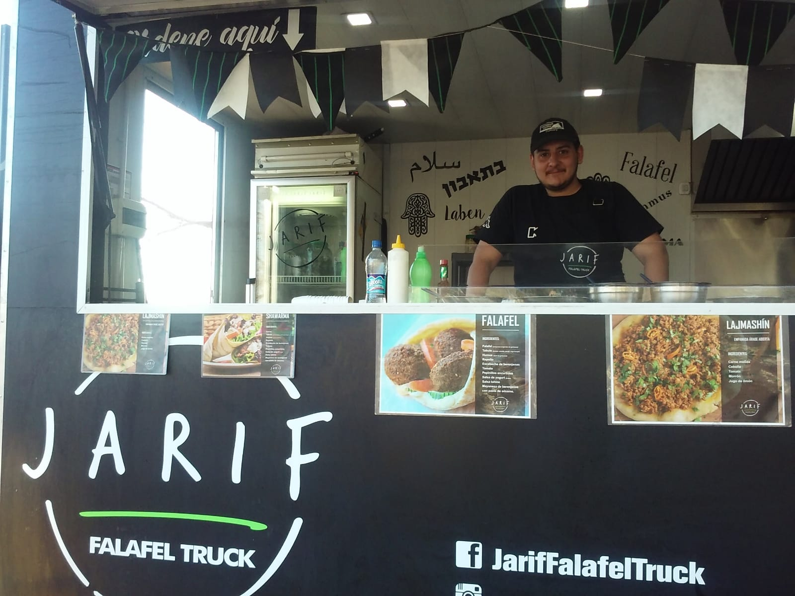
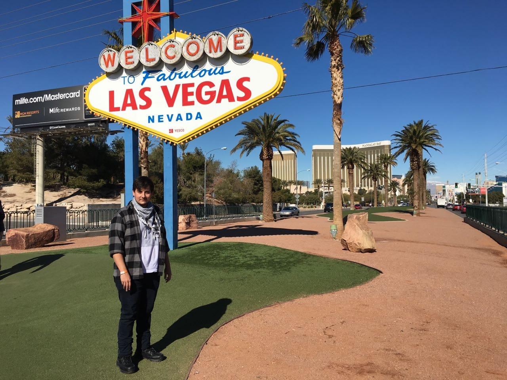
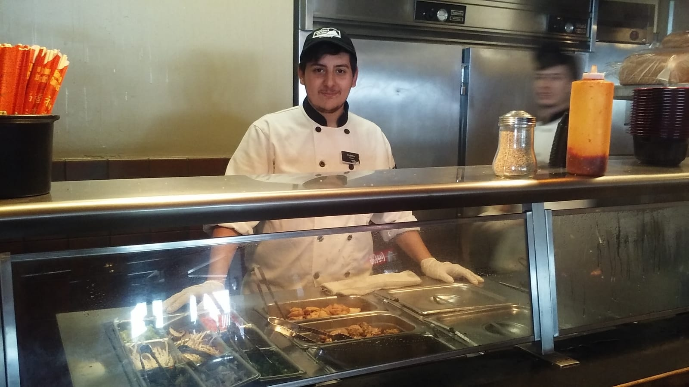

About // Acerca de
My name is Federico Schaufele im from Cordoba Argentina, im 28 years old, currently living in Rio Grande-Tierra del Fuego. I am a certified cook graduated from the Mariano Moreno higher Institute, Since the start of the pandemic i've been studing programing by myself, mainly HTML and CSS. Later on the year 2020 i decided to take a step up and enroll in the UTN to further my knowledge on programing. As to why the sudden change in carrer, it mostly due to the fact that my former carrer has been impacted greatly due to the pandemic, and this in turn forced me to adapt to the necesities of today, and in doing so i discovered that programing and designing web pages is a challenge but at the same time is also very rewarding once its done and working.
Mi nombre es Federico Schaufele soy de Cordoba Argentina, tengo 28 años , actualmente vivo en Rio Grande-Tierra del Fuego. Soy Profesional Gastronomico recibido del instituto superior Mariano Moreno. Desde el comienzo de la pandemia e estado estudiando programacion por mi cuenta, especificamente HTML y CSS. En el año 2020 decidi profundizar mis estudios y me inscribi en la Tecnicatura en programacion de la UTN. El porque sobre el cambio repentino de carerra se debe en mayor medida a la pandemia y el hecho de que mi sector de trabajo previo se vio fuertemente afectado, esto a su vez me forzo a adaptarme a las necesidades laborales de hoy en dia, y en todo esto descubri que programar y diseñar paginas web es todo un desafio pero a su vez es satisfactorio una vez que todo esta listo y funcionando
Timeline
Linea de Tiempo
2021
"YPF" Gas Station - Gas station attendant
"YPF" Estacion de Servicio - Playero
1
2019-2020
Personal Proyect "Fenix Menus" Catering and custom menus
Proyecto Personal "Fenix Menus" Servicio de Catering y menus personalizados
2
2018
"Al Jariff" Arab themed Food Truck Cook
"Al Jariff" Food Truck de Comida Arabe , Cocinero
3 2017
Primary Line Cook - Crested Butte // Colorado (US)
Cocinero Primario - Crested Butte // Colorado (Estados Unidos)
4 2015
Cook in a Chinese Restaurant "BudaTown"
Cocinero en Restaurante Chino "BudaTown"
5 2013
Notary Firm Courier (Internship)
Cadete de Escribania (Pasantia)
6